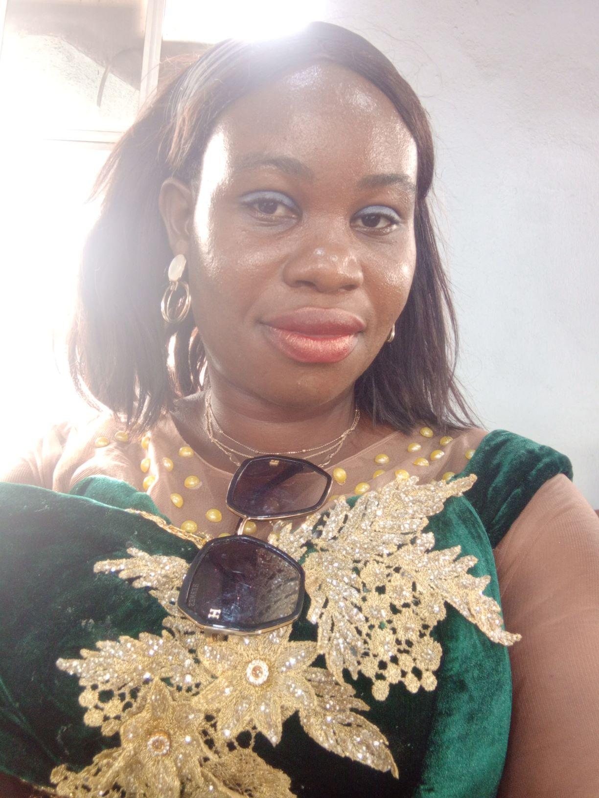

HI
Am Ndafia,Jane Kalu. who transitioned from being a passionate teacher to a skilled software engineer.As a software engineer,I specialized in
- WEb development:creving interactive and user-friebdly web applications
- Tackling complex challenges with creative solutions
- Continuous learning :Emmbracing new technologies and stayingg up-to-date with industry trend
Future-Prospect
I'm excited about exploring new knowledge ,opportunities and frontier
- learn coding languages:examples include HTML,CSS,JAVASCRIPT,PYTHON etc
- Machine learning:delving into the fascinating world of machine intelligent
- AI Development :Contributing to the advancement of artificial intelligent application
- API:Build different APIs that are fundamental for the development of mordern software applications ,enabling the interaction between various services,libraries or systems
- Open-Source Projects:Actively participating in and contributing to open source initiatives
- Continuous Learning:Apply for Masters in computer Science